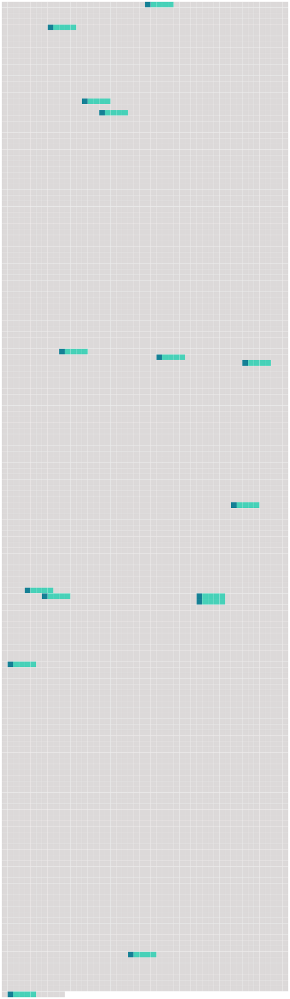

Longueur nb maillons : 15 mentions |
|
Les membres de la commission mentionnés au 2 ° sont nommés par arrêté conjoint du garde des sceaux, ministre de la justice, et [du ministre de l'intérieur] pour une durée de quatre ans renouvelable une fois et ont chacun un suppléant désigné dans les mêmes conditions. [3 phrases]
Les modalités d'organisation et le programme des épreuves de l'examen technique prévu aux deuxième et troisième alinéas sont fixés par arrêté conjoint du garde des sceaux, ministre de la justice, et [du ministre de l'intérieur] [15 phrases]
Article R9 [1 phrases]
Article R10 [52 phrases]
Section 3 : Des agents de police judiciaire
Un arrêté conjoint du garde des sceaux, ministre de la justice, et [du ministre de l'intérieur] fixe le contenu du programme de la formation et des épreuves de l'examen technique ainsi que les modalités d'organisation de celles -ci et d'établissement de la liste des candidats reçus. Une ou plusieurs commissions d'examen, dont les membres sont nommés par arrêté conjoint du garde des sceaux, ministre de la justice, et [du ministre de l'intérieur] , sont instituées dans chaque ressort de cour d'appel comportant au moins un centre interdépartemental ou départemental de stages et de formation de la police nationale. [11 phrases]
Elle est décidée par arrêté [du ministre de l'intérieur] lorsque leur compétence territoriale n'excède pas ces limites. [5 phrases]
Elle est décidée par arrêté [du ministre de l'intérieur] lorsque leur compétence territoriale n'excède pas ces limites. [1 phrases] Toutefois, la création des unités de la gendarmerie maritime, de la gendarmerie de l'air, de la gendarmerie de l'armement est décidée par arrêté [du ministre de l'intérieur] et du ministre de la défense. La création des unités de la gendarmerie des transports aériens est décidée par arrêté conjoint [du ministre de l'intérieur] et du ministre chargé des transports.
La création des unités autoroutières, aériennes, fluviales, nautiques ou de montagne de la gendarmerie départementale et des pelotons spécialisés de protection de la gendarmerie placés auprès d'installations d'importance vitale est décidée par arrêté [du ministre de l'intérieur] [7 phrases]
Les officiers et agents de police judiciaire affectés au service de police intervenant sur les réseaux de transport en commun de voyageurs par voie ferrée de la zone de défense et de sécurité d'Ile-de-France sont compétents sur toute l'étendue de cette zone de défense et de sécurité et, au-delà des limites de cette zone, sur les lignes, stations, gares, arrêts et couloirs prolongeant ces réseaux dont la liste est fixée par arrêté conjoint du ministre de la justice et [du ministre de l'intérieur] [57 phrases]
Article R15-33-26 [8 phrases]
Le commettant délivre au garde particulier une carte d'agrément qui comporte les mentions prévues par arrêté conjoint [du ministre de l'intérieur] et des ministres intéressés. |
 |
Il est possible de télécharger la ressource sur la page Ortolang |
Si vous avez des questions ou vous voyez des erreurs, merci d'envoyer un mail à silvia.federzoni89@gmail.com |